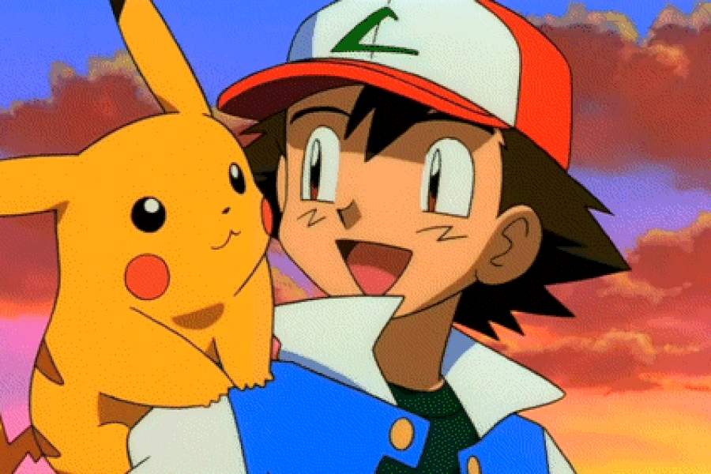

| Ash Ketchum tiene 10 años y vive en pueblo Paleta, está listo para comenzar su viaje en el mundo Pokémon y sueña con convertirse en un maestro Pokémon, pero el día que va a recibir su primer Pokémon, se queda dormido, al llegar El profesor Oak, el investigador local de Pokémon, ya ha regalado los tres Pokémon (Bulbasaur, Charmander y Squirtle). El único Pokémon que le queda es un Pikachu, que le da a Ash. Decidido a triunfar en su viaje, Ash hace todo lo posible para hacerse amigo de Pikachu, pero este se niega a confiar en él y elige mantenerse al margen de la Pokébola, e incluso ataca a Ash con sus poderes eléctricos. |
POKEMON |